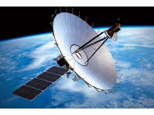

Total number of Satellites launched till date: 1535
Success: -
Failure: -
Active Satellites: 169
Operational Satellites by Purpose
Civil: 37
Commercial: 32
Military: 100
List of Satellites
-
Sputnik 1 was the first artificial Earth satellite. The Soviet Union launched it into an elliptical low Earth orbit on 4 October 1957. It orbited for three weeks before its batteries died and then orbited silently for two months before it fell back into the atmosphere.Launch Date: 4 October 1957
Operational Till: 26 October 1957
Purpose: Technology Demonstration
Weight: 83.6 kg
Power: 1 W

-
Luna 9, internal designation Ye-6 No.13, was an uncrewed space mission of the Soviet Union's Luna programme. On 3 February 1966, the Luna 9 spacecraft became the first spacecraft to achieve a survivable landing on a celestial bodyLaunch Date: 31 January 1966
Operational Till: 6 February 1966
Purpose: Lunar Lander
Weight: 99 kg
Power: -

-
Spektr-R[6] (part of RadioAstron program) was a Russian scientific satellite with a 10 m (33 ft) radio telescope on board. It was launched on 18 July 2011, by Zenit-3F launcher, from Baikonur Cosmodrome to perform research on the structure and dynamics of radio sources within and beyond our galaxy. Together with some of the largest ground-based radio telescopes, this telescope formed interferometric baselines extending up to 350,000 km (220,000 mi).Launch Date: 18 Juy 2011
Operational Till: 11 January 2019
Purpose: Radio Telescope
Weight: 2500 kg
Power: -
